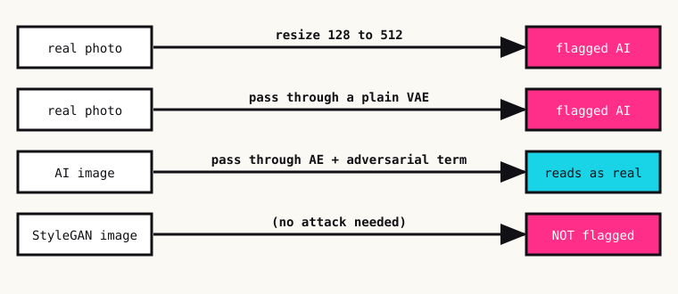
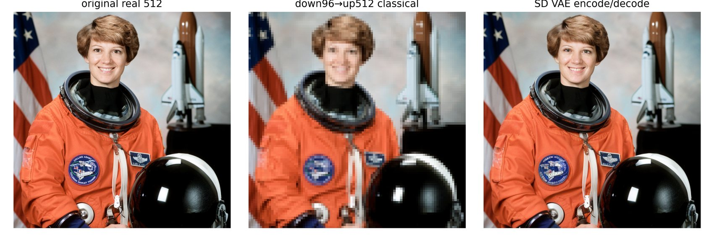
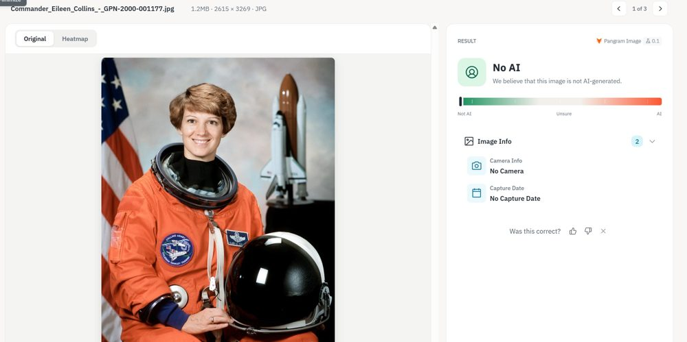
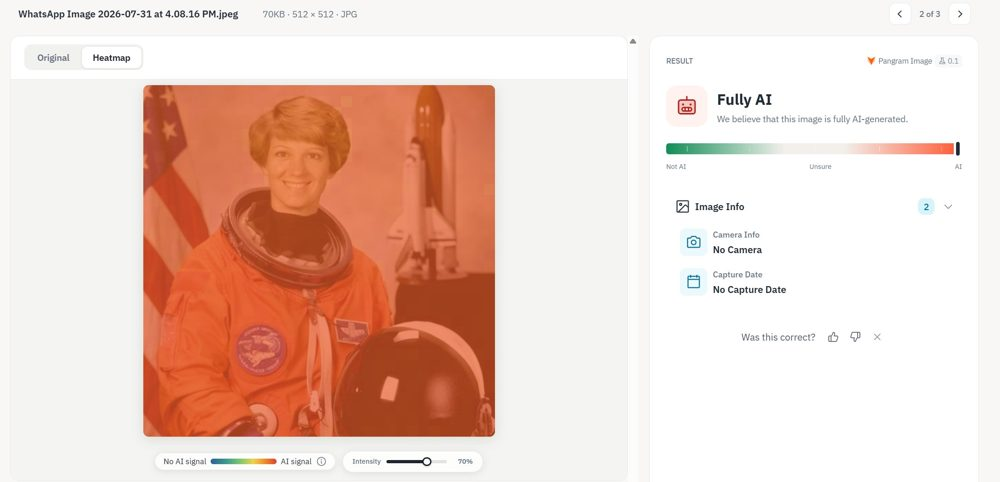
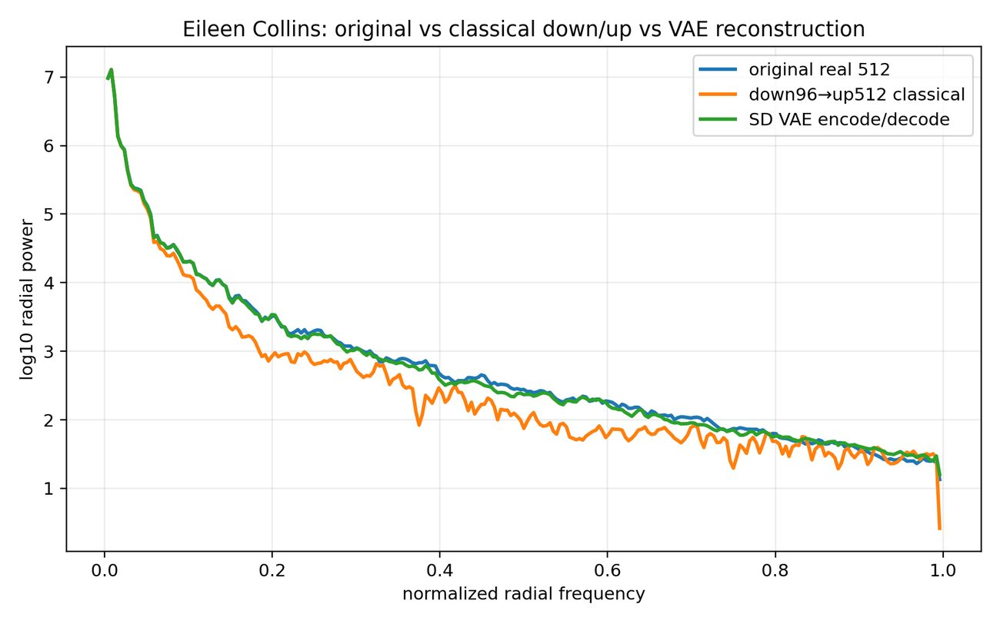
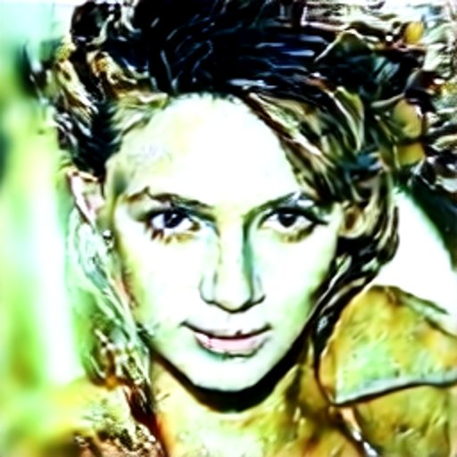
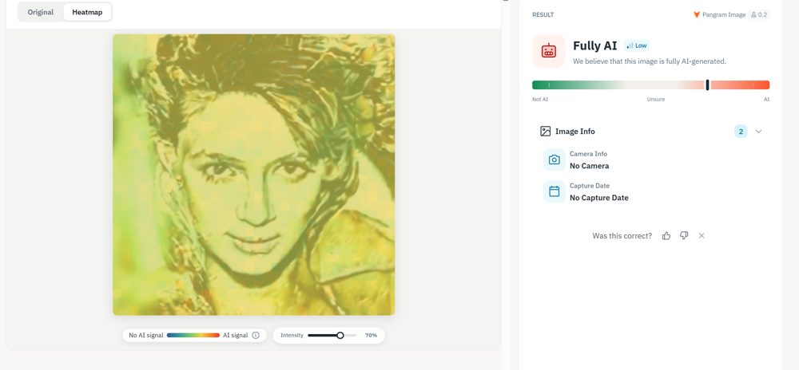
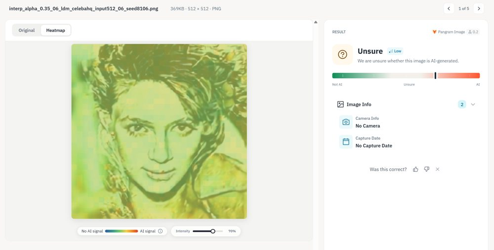
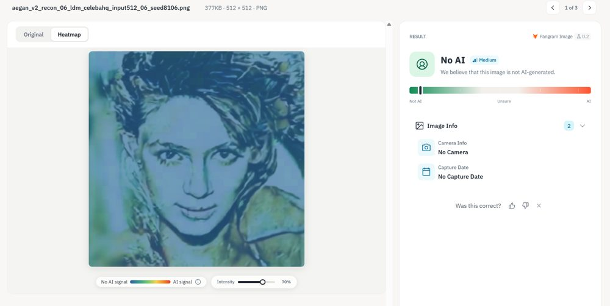

I broke an AI-image detector, in both directions
In August I posted a thread saying I could break Pangram's AI-image detector in both directions: turn a real image into one it flags as AI, and an AI image into one it calls real. This is the longer version. I used the free plan, since Pangram never gave me API access. I'm not releasing checkpoints, for the reasons at the end. I like the company and think detection is worth working on, which is why I attacked it.
Why I expected it to be brittle
A diffusion model samples from the distribution of real images, so a good one produces images that are statistically close to real ones. Pangram says it can tell AI images from photoshopped ones, which is hard for a person. People tell by content, like extra fingers and garbled text, so I guessed the detector reads something spectral instead: high-frequency traces left by how an image was made. If so, moving energy around in frequency space should break it.
Four experiments

1. Upscaling a real photo. Resizing a real image with most classical algorithms made the detector call it AI. Going from 128×128 to 512×512 was enough.

Pangram's screens for the original and a resized copy


2. Re-encoding through a VAE. Also flagged as AI. Multistep generation leaves high-frequency artifacts, and a plain autoencoder leaves them too.
3. Matching the spectrum. Matching frequency statistics to real images did not fool it, so it isn't a global spectrum check. My guess is that it looks at local patches, which is why I moved to learning the attack.

4. An autoencoder with an adversarial term. I trained an autoencoder on CelebA with a GAN-style discriminator and ran AI images through it. The output is a close copy that the detector calls real. Interpolating between the original and the re-encoded image moves the verdict smoothly, so the confidence can be set to a chosen value. A single image can be optimized against a discriminative prior in minutes on a laptop, and a model for a whole domain takes about a day. A StyleGAN image was not detected as AI to begin with, which fits the idea that the fingerprint comes from the generation process.

The three faces are synthetic and look nearly identical to me. The verdict goes from "Fully AI" to "Unsure" to "No AI".
Pangram's screens for these three



An image encoded through an ordinary autoencoder becomes "AI". Encoded through one with an adversarial term, it becomes "real".
Text
I ran far fewer text experiments. LLMs are fine-tuned and RLHF'd into their own vocabulary and cadence, and a detector can learn each large model's fingerprint. Pangram's embedding apparently separates Claude, ChatGPT and Gemini cleanly. Strings of random numbers have been reported as AI, which looks like overfitting to existing models. Text that matches no single model should get through, and training your own model is the easy way to get that. I tried it with a small language model trained as a Twitter bot, which is one data point. I'd want to see whether models fine-tuned on a specific domain, like essays, also get through.
Why the code stays private
Turning real images into "AI" lets someone deny real evidence. Turning AI images into "real" does the opposite. I couldn't think of an ordinary reason to need either, so the checkpoints stay private. The thread has enough to reproduce the results. People with more resources would do it faster than I did, which is why I wanted to say it publicly.
Pangram's reply
Max Spero, the co-founder, replied constructively and asked a hard question. If you upscale by a large factor the upscaler hallucinates detail, so calling the result AI is arguably right, and he asked what taxonomy I'd propose.
For extreme upscaling I agree. But 128 to 512 isn't extreme, and many people upscale images without knowing it. My concern is that everyday processing pushes real photos into the AI bucket, and a false positive on a real photo is the case a detector exists to avoid. "AI-generated", "AI-edited" and "passed through a normal resize" shouldn't share one label.
Where I ended up
For images from the large labs I expect detection to keep working. Their models leave footprints and there is plenty of labeled data. Pangram does well on images that were already generated, because nobody generates with a GAN or an adversarial autoencoder by accident.
Against someone adversarial, the defender has to cover every failure mode and the attacker needs one. Odd downsampling, better spectral prediction or a humanizing model for images could all shift an output. I don't expect the detector to win that race.
What I'd ask for is a detector that says when it's out of its depth and is robust to benign transforms like upscaling. At the moment a verdict gets treated as ground truth when it is a measurement. I would treat a Pangram result as one piece of evidence. If anyone at Pangram wants the details, I'll share them directly.